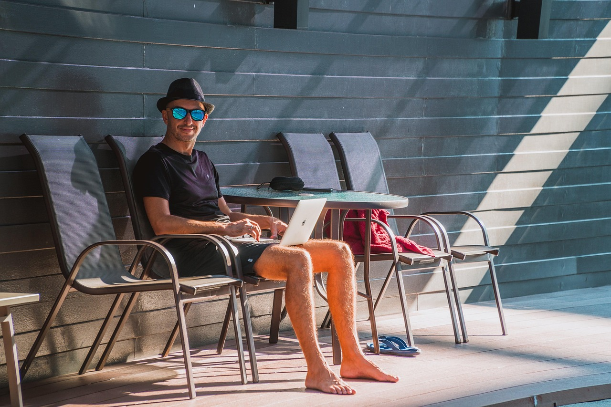

Conecte-se com profissionais experientes e acelere seu desenvolvimento ou compartilhe seu conhecimento e encontre talentos.
Encontre um Mentor
Busque mentores por área de especialidade, objetivos de carreira ou disponibilidade. Receba orientação personalizada.

Seja um Mentor
Compartilhe sua experiência, ajude a moldar a próxima geração de profissionais e identifique futuros talentos para sua equipe.
Comunidade WorkBridge
Participe de fóruns de discussão, eventos virtuais e desafios colaborativos com outros membros.
Acessar Comunidade